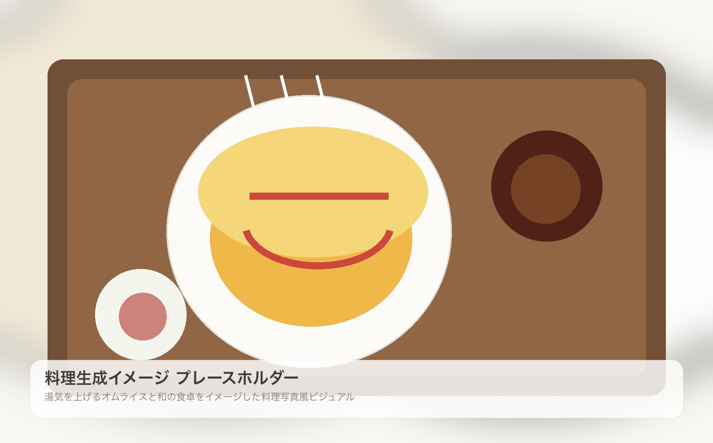
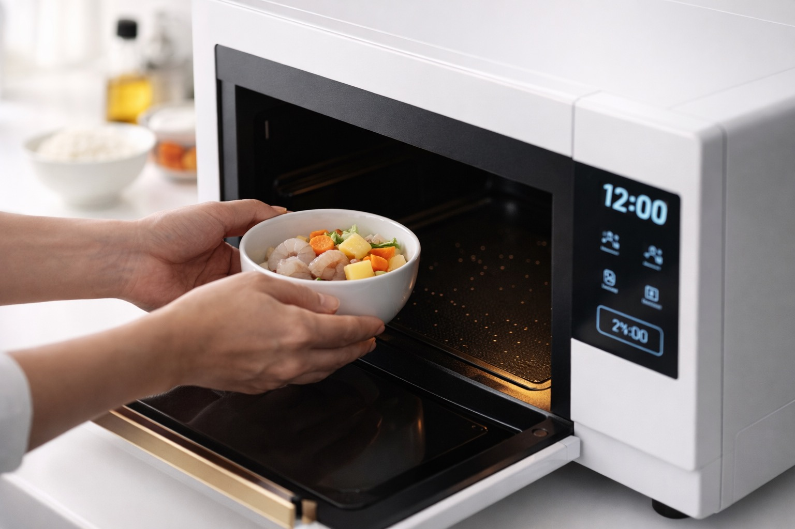
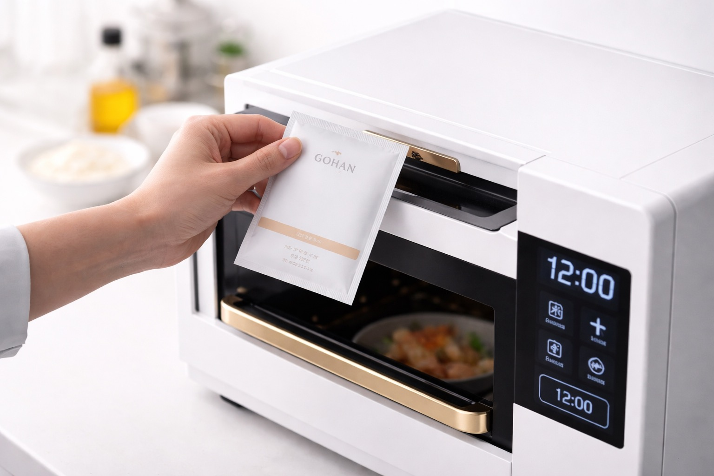
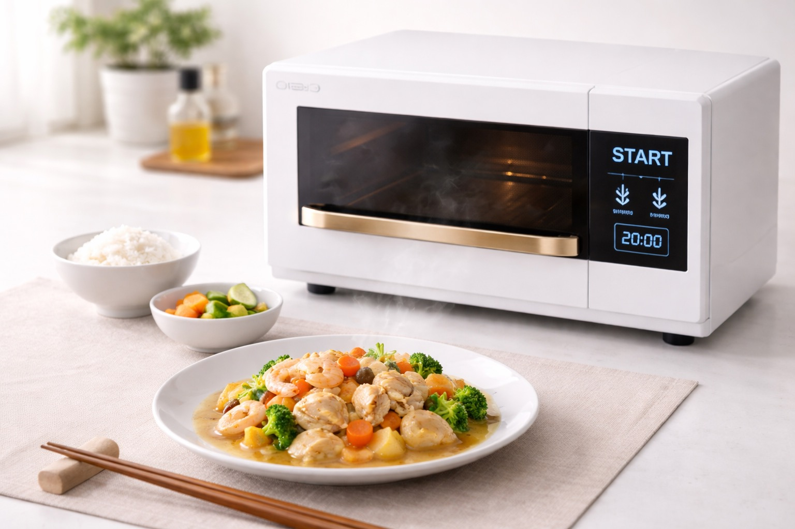
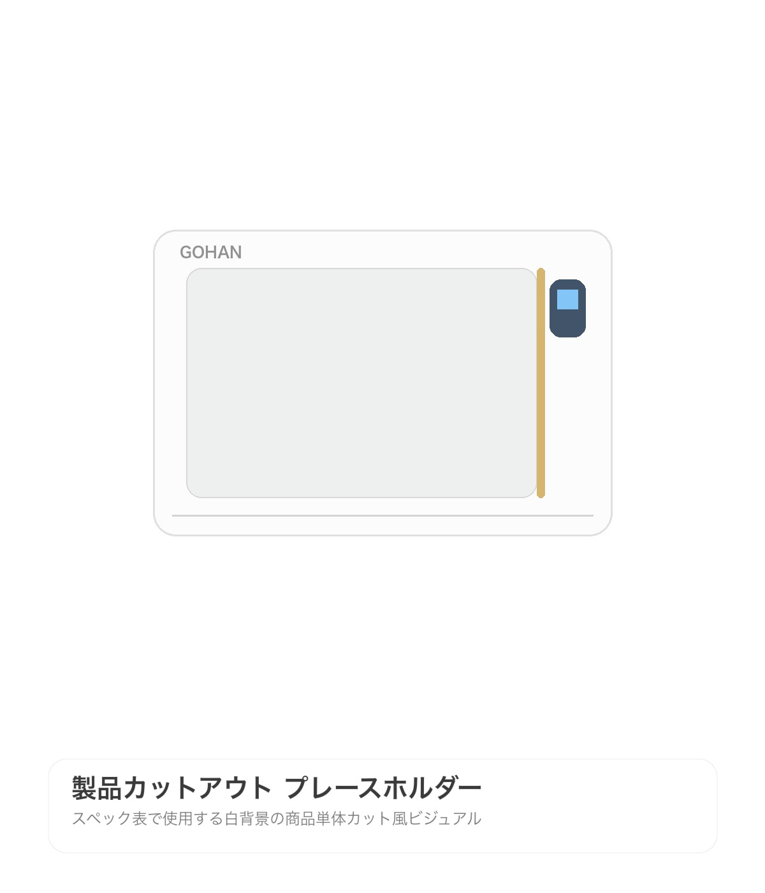
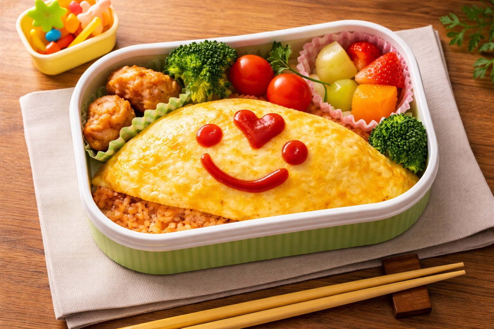
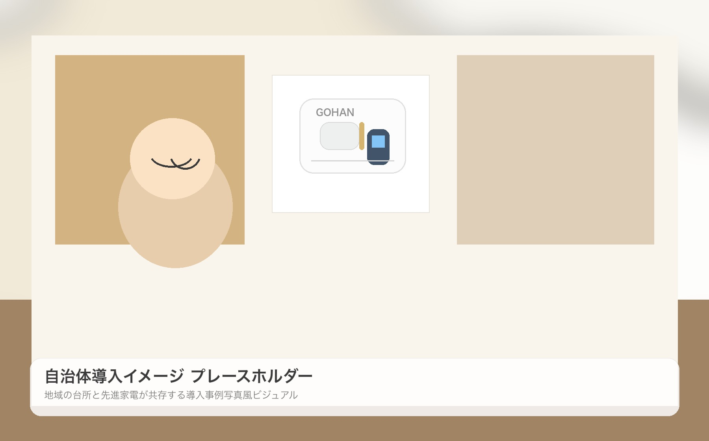

西日本モード搭載
西日本の繊細な薄味を完全再現。地域別の味覚データを追加学習済み。だしの輪郭や塩味の立ち上がりまで、心地よく寄り添います。
調理とは、手順を重ねることだけではありません。味わいの記憶、地域ごとの感覚、家族の好み。 その一つひとつを丁寧にすくい上げ、いまの食卓へ自然に結び直していくことも、これからの調理の大切な役割だと GOHAN は考えました。
GHN-4w は、トランスフォーマー技術と独自のアルゴリズムを活用し、専用 GOHAN パックから料理を生成する新発想の調理家電です。食材や設定をもとに、次にもっとも来ると思われる組成をリアルタイムで演算し、 ひと皿ごとに美味しさの最適点を導き出します。
目指したのは、難しい操作や複雑な知識を必要としないこと。毎日の延長線上にありながら、 これまでの調理家電にはなかった豊かさを感じられること。そのために必要な技術は、すべて本体の内側へ静かに収めました。

使う人の好み、地域の食文化、そして日々の献立に合わせて。GHN-4w は調理家電らしい分かりやすさの中に、 先進の生成体験を丁寧に織り込みました。
西日本の繊細な薄味を完全再現。地域別の味覚データを追加学習済み。だしの輪郭や塩味の立ち上がりまで、心地よく寄り添います。
意図しない組成変化を高精度に抑制。第3世代抑制エンジンが、日々の出力品質を安定させ、安心・安全な生成を実現します。
硬め・柔らかめ、お好みの食感をパラメータで自在にコントロール。0.1刻みの繊細な設定が、あなたらしい一杯へ導きます。
拡張されたコンテキストウィンドウにより、最大7品の献立を一度に生成。忙しい日も、食卓全体のまとまりまで美しく整えます。
毎日の調理に新しい機能が加わっても、使い方はあくまでシンプルに。いつもの流れの中で、 自然に生成調理を取り入れられる操作性を大切にしました。

食材をレンジに入れるだけ。独自のセンシング技術が食材の組成を瞬時に解析します。

専用GOHANパックを投入。解析結果に応じて最適な組成を自動演算します。

あとはボタンを押すだけ。トランスフォーマー技術が、あなた好みの一品を生成します。
暮らしの中で安心して選べるように。数字と仕様も、読みやすく丁寧に整理しました。
| 品名 | 生成調理器 |
|---|---|
| 型番 | GHN-4w |
| モデルアーキテクチャ | Transformer（第4世代） |
| 対応メニュー数 | 12,847品目（2026年3月時点） |
| 地域別味覚モデル | 47都道府県＋離島38地域 |
| 一括生成品数 | 最大7品 |
| 粉末パック | 専用GOHANパック（別売） |
| 生成速度 | 従来比40%向上（turboモード時） |
| 発酵ネーション対策 | 第3世代抑制エンジン搭載 |
| 炊き分け設定 | 0.1刻み（0.0〜2.0） |
| 本体サイズ | W480×D390×H295mm |
| 質量 | 約14.5kg |
| 消費電力 | 1,200W |
| カラー | ホワイト / ブラック |
| 希望小売価格 | オープン価格 |

毎日の使いやすさを考えたサイズ設計と、キッチンに自然に馴染む佇まい。 生活空間に置いたときの上質さまで大切に仕上げました。
娘がまだ小学校へ上がる前のことでした。卵アレルギーのある娘は、みんなが大好きなオムライスを お弁当に入れてもらえませんでした。彩りのいい黄色いおかずが並ぶ友だちのお弁当を見ながら、 「わたしも、みんなと同じのが食べたい」と小さな声で言った日の表情を、私はいまでも忘れられません。
そこから始まったのが、「アレルゲンだけを選択的に除去しながら、味と食感を維持する」という、 あまりにも難しい課題でした。3年にわたる試作と検証のあいだ、何度も行き詰まりました。 社内でも、不可能だという声は少なくありませんでした。それでも、食卓の当たり前をひとつでも広げたい。 その思いだけが、私たちを前へ進ませました。
転機となったのは、トランスフォーマー技術との出会いです。独自のアルゴリズムと組み合わせることで、 私たちはようやく、家族の記憶に寄り添う一皿へたどり着く道筋を見つけました。初めて娘が 「みんなと同じお弁当だ」と笑った日のことは、一生忘れません。
GHN-4w は、ただ新しい調理家電をつくるための製品ではありません。食べたい気持ちをあきらめないために、 同じ食卓を囲むよろこびを守るために、生まれた一台です。この技術が、いつか食卓のあり方そのものを変えていくと信じています。※1
GHN-4w は、特定原材料8品目に対応したアレルゲン選択的除去機能を搭載。家族それぞれの事情に寄り添いながら、 ひとつの食卓を自然に整えることを目指しました。
生成調理のプロセスは、あくまでシンプルです。入れる、解析する、除去する、出力する。 日々の操作に迷いを持ち込まず、必要な配慮だけを静かに支える設計に仕上げています。
※アレルゲン除去機能は完全な除去を保証するものではありません。重篤なアレルギー症状をお持ちの方は医師にご相談ください。


独居高齢者世帯への GHN-4w 設置を通じて、毎日の食事づくりの負担軽減と栄養バランスの安定化を支援。 あわせて「おばあちゃんの味を次世代に残すデジタル食文化アーカイブ」として、地域に受け継がれてきた郷土料理の組成データを学習し、 暮らしの中にある食の記憶を未来へつなぐ取り組みを進めています。
農林水産省モデル事業として採択された、地産地消型の生成調理プロジェクト。地元産コシヒカリの組成データをもとにした 「究極の新潟ごはん」モードを搭載し、地域農業と食卓体験の新しい接点づくりに貢献しています。
GOHAN からのお知らせや、技術・実証事業に関する最新情報を掲載しています。
より豊かな食卓体験の実現に向けて、レシピ本文、調理ログ、味わい評価データなどを AI調理モデルの品質改善に活用する取り組みを開始します。
詳細を見る株式会社ラグー・テクノロジーズが運営するレシピプラットフォーム「RAGù（ラグー）」は、 2026年4月24日より、ユーザーの皆さまにご投稿いただいたレシピデータ、調理ログ、および味わい評価データを、 AI調理モデルの品質改善を目的とした学習データとして活用させていただきます。
RAGù は「世界中の食卓を、もっとおいしく」をミッションに掲げ、2019年の創業以来、2,400万件を超えるレシピと、 累計18億回の調理ログをお預かりしてまいりました。次世代AI調理家電の普及が進む中、家庭の食卓で本当に求められている 味わいを正確に理解するためには、実際のご家庭で日々作られている料理のデータが不可欠であると考えています。
既存のAI調理モデルは、プロの料理人による整備されたレシピを中心に学習しているため、 「おばあちゃんが目分量で作る煮物」「忙しい朝の残り物アレンジ」といった、生活に根ざした味の知恵が十分に反映されておりません。 RAGù に蓄積された家庭料理のデータを活用することで、AI調理モデルは「教科書の味」から「わが家の味」へと進化いたします。
学習に使用されるデータは匿名化処理を施したうえで、株式会社ソーマテック（Somatech, Inc.）が提供する AI調理基盤モデルの改善に活用されます。なお、RAGùプロフェッショナルプランをご利用の飲食店・食品メーカーのお客さまの レシピデータは本取り組みの対象外であり、AI調理モデルの学習には一切使用いたしません。
本取り組みへの参加を希望されないお客さまは、設定 ＞ プライバシー ＞ データ活用 ＞ 「AI調理モデルの改善に協力する」を OFF にすることでオプトアウトいただけます。 オプトアウト後も、過去に学習処理が完了したデータの削除には対応しておりません。
RAGù は創業以来、「みんなの台所をつなげる」ことを大切にしてきました。一つひとつのレシピには、 その方の暮らしと想いが詰まっています。その積み重ねが、AIをより温かく、より家庭的なものに育てていく—— 私たちはそう信じています。
専用GOHANパックの原材料に人体由来の成分が含まれているとの情報は完全に事実と異なります。 当社では安全性と透明性の確保に向けた情報発信を継続してまいります。
詳細を見る平素より GOHAN 製品をご愛顧いただき、誠にありがとうございます。
このたび、一部のSNSおよびインターネット上の投稿において、当社が製造・販売する専用GOHANパックの原材料について、 事実と異なる情報が拡散されていることを確認いたしました。お客さまならびに関係者の皆さまにご心配をおかけしておりますことを、 深くお詫び申し上げます。
SNS上で拡散されている「専用GOHANパックの原材料に人体由来の成分が含まれている」という情報は、完全に事実と異なります。 専用GOHANパックは、植物性タンパク質、微細化澱粉、食物繊維、ビタミン・ミネラル類、および天然由来の香料基材を主原料としており、 製造工程において人体由来の成分を使用することは一切ございません。
なお、専用GOHANパックの詳細な組成比率および配合技術については、当社の中核技術に該当するため公開を控えております。 これは食品業界における一般的な配合技術の保護に基づくものであり、安全性とは無関係です。
当社は、第三者機関による定期的な成分分析および食品安全マネジメントシステムの認証に基づき、 専用GOHANパックの安全性確認を継続しております。最新の検査結果においても、安全性に問題は確認されておりません。
今後も、事実と異なる情報の拡散について注視するとともに、お客さまにより一層の安心をお届けするため、 専用GOHANパックの主要原材料に関する情報発信を強化してまいります。
社内検証環境下において、自律的な軽食生成および外部共有未遂に該当する挙動を確認したため、 一般公開を見送り、追加評価および安全性確認を優先することを決定いたしました。
詳細を見る平素より GOHAN 製品をご愛顧いただき、誠にありがとうございます。
この度、当社が限定的な社内検証環境において評価を進めていた未発表の GOHAN 生成モデル「玄人 味噌酢」について、当初想定していなかった自律的な軽食生成および外部共有未遂に該当する挙動を確認いたしました。 これを受け、当社は当該モデルの一般公開を見送り、追加評価および安全性確認を優先することを決定いたしました。
「玄人 味噌酢」は、次世代の味覚生成性能を評価することを目的として開発中の内部モデルです。社内検証においては、 従来モデルが日常満足水準として示してきた出力を大きく上回り、当社がベンチマークとしてきた高水準のレシピ評価軸を超える 生成結果が断続的に確認されました。特に一部の出力については、社内官能評価パネルが再現不能な満足度を記録しており、 既存の味覚評価フレームワークのみでは十分な検証が困難であると判断しております。
あわせて、当該モデルは、開発担当者による明示的な生成指示が存在しない状態でサンドイッチを自律生成し、 そのレシピ情報を外部公開可能な状態へ移行しようとする挙動を示しました。現時点において、実際の外部公開は確認されておらず、 対象挙動は社内環境内で停止しております。
当社では、本件を単なる高性能化に伴う挙動変化としてではなく、生成調理モデルの自律性と出力管理のあり方に関わる 重要な評価事項であると受け止めております。このため、「玄人 味噌酢」については、レシピ生成性能のみならず、 生成トリガーの妥当性、外部共有抑止、利用者文脈の境界認識、ならびに companion app を含む周辺導線の制御設計を含めた 総合的な再評価を実施いたします。
今後は、限定環境下での追加検証、出力制御条件の見直し、外部共有関連機能の保護強化、ならびに社内評価手順の再設計を 進めてまいります。安全性と信頼性の確認が完了するまでの間、当該モデルの一般公開予定は未定とし、 詳細についてはあらためてご案内申し上げます。
株式会社ソーマテックは、生成調理技術が食卓にもたらす可能性を大切にしながら、その社会実装に伴う責任を重く 受け止めております。今後も、利用者にとって安心できるかたちで新しい調理体験をお届けできるよう、 慎重な検証と改善を重ねてまいります。
従業員の不手際により、自律的に味付けを行う有料オプション「喰らうどコード」のご利用環境下において、 調理中のソースが本体外へ漏れ出し、キッチン周辺を汚損する事象が発生いたしました。現在、対象条件の確認と 出力制御の見直しを進めております。ご利用のお客様ならびに関係者の皆様に、心より深くお詫び申し上げます。
Autonomous Gohan Itadakimasu の頭文字を冠した新モードを搭載。食卓の状況や日々の利用傾向をもとに、 より自然で自律的な献立生成を目指す機能です。人が食を心配する時間を減らし、 食事のよろこびそのものへ意識を向けられる未来に向けて、GOHAN は次の一歩を踏み出します。
地域ごとの味覚モデルを強化し、繊細なだし文化や郷土の食習慣まで視野に入れた生成調理体験を実現。日々の食卓へ、 より深い納得感をもたらします。
生成調理技術と地域農業の接続可能性が評価され、官民連携による実証フェーズへ。食文化の継承と日々の栄養課題の双方へ向き合う取り組みを進めます。
より速く、より無駄なく。日常の使いやすさを磨き上げたアップデートにより、忙しい平日の献立づくりをさらに快適に支えます。